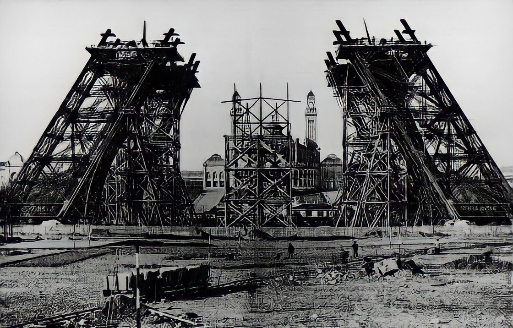
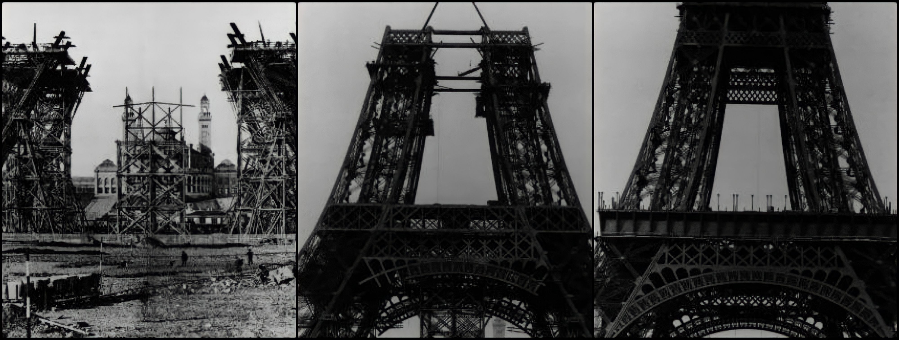
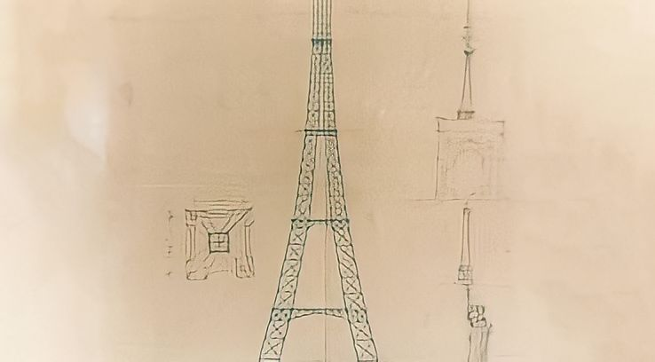
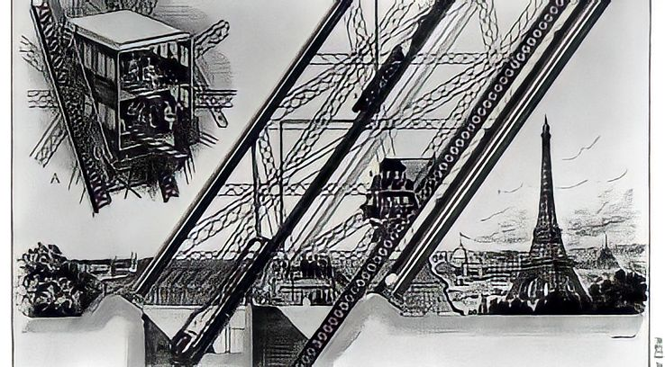

|  |
| The birth of the Eiffel tower |
| ☼ It was at the 1889 Exposition Universelle, the date that marked the 100th anniversary of the French Revolution, that a great competition was launched in the Journal Officiel.
☼ The first digging work started on the 26th January 1887. On the 31st March 1889, the Tower had been finished in record time – 2 years, 2 months and 5 days – and was established as a veritable technical feat. |
Key figures |
| Design :- |
• 18,038 metallic parts
• 5,300 workshop designs
• 50 engineers and designers |
| Construction :- |
• 150 workers in the Levallois-Perret factory
• Between 150 and 300 workers on the construction site
• 2,500,000 rivets
• 7,300 tonnes of iron
• 60 tonnes of paint
• 5 lifts |
| Duration :- |
• 2 years, 2 months and 5 days of construction |
The Design of the Eiffel Tower |
| ☼ The plan to build a tower 300 metres high was conceived as part of preparations for the World's Fair of 1889.
☼ The wager was to "study the possibility of erecting an iron tower on the Champ-de-Mars with a square base, 125 metres across and 300 metres tall". Selected from among 107 projects, it was that of Gustave Eiffel, an entrepreneur, Maurice Koechlin and Emile Nouguier, both engineers, and Stephen Sauvestre, an architect, that was accepted.
☼ Emile Nouguier and Maurice Koechlin, the two chief engineers in Eiffel's company, had the idea for a very tall tower in June 1884. It was to be designed like a large pylon with four columns of lattice work girders, separated at the base and coming together at the top, and joined to each other by more metal girders at regular intervals.
☼ The tower project was a bold extension of this principle up to a height of 300 metres - equivalent to the symbolic figure of 1000 feet. On September 18 1884 Eiffel registered a patent "for a new configuration allowing the construction of metal supports and pylons capable of exceeding a height of 300 metres". ☼ n order to make the project more acceptable to public opinion, Nouguier and Koechlin commissioned the architect Stephen Sauvestre to work on the project's appearance. |
|  |
|  |
A quite different first edition
Sauvestre proposed stonework pedestals to dress the legs, monumental arches to link the columns and the first level, large glass-walled halls on each level, a bulb-shaped design for the top and various other ornamental features to decorate the whole of the structure. In the end the project was simplified, but certain elements such as the large arches at the base were retained, which in part give it its very characteristic appearance. |
The construction
The assembly of the supports began on July 1, 1887 and was completed twenty-two months later.
All the elements were prepared in Eiffel’s factory located at Levallois-Perret on the outskirts of Paris. Each of the 18,000 pieces used to construct the Tower were specifically designed and calculated, traced out to an accuracy of a tenth of a millimetre and then put together forming new pieces around five metres each. A team of constructors, who had worked on the great metal viaduct projects, were responsible for the 150 to 300 workers on site assembling this gigantic erector set. |
 |
|